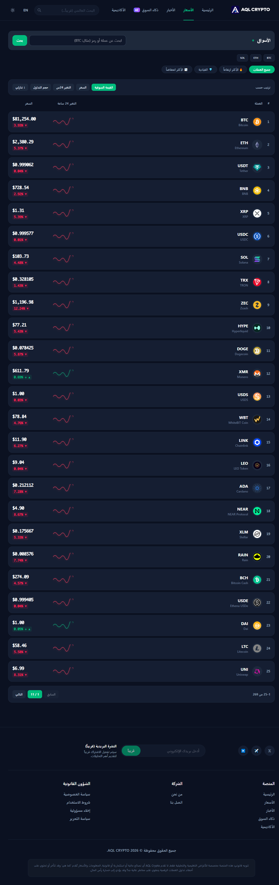
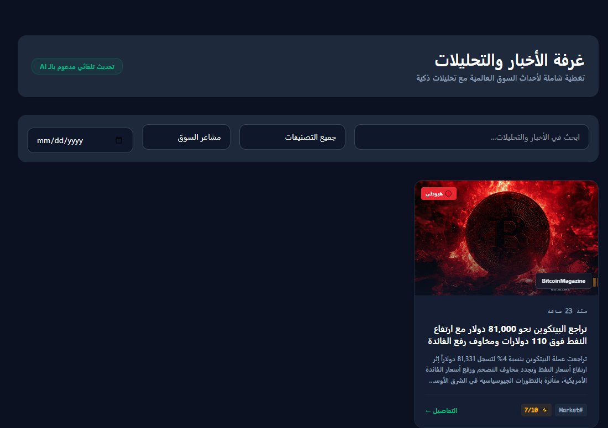
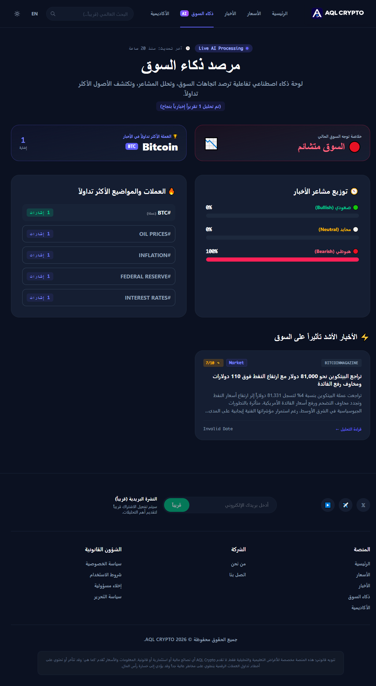

أسعار السوق
عرض أسعار العملات الرقمية وبيانات السوق العامة بالاعتماد على واجهات بيانات خارجية.
منصة معلوماتية لمتابعة سوق العملات الرقمية
عقل كريبتو منصة معلوماتية تجمع بيانات السوق والأخبار والتحليلات والمؤشرات الاقتصادية في مكان واحد. يركز المشروع على تقديم معلومات واضحة ومحدثة لمساعدة الزائر على فهم حركة السوق، دون تنفيذ تداولات أو إدارة محافظ أو استقبال إيداعات.
الاستضافة السابقة متوقفة حاليًا، ومستودع الشيفرة خاص؛ لذلك لا تتوفر روابط عامة للمعاينة أو الشيفرة.
صُممت المنصة لتجميع المعلومات المهمة في تجربة واحدة، مع الاعتماد على مصادر بيانات ومحتوى آلي حيثما أمكن.
عرض أسعار العملات الرقمية وبيانات السوق العامة بالاعتماد على واجهات بيانات خارجية.
جمع الأخبار من خلاصات RSS ومصادر متخصصة، مع معالجة التكرار وتنظيم المحتوى.
محتوى تحليلي وتقارير آلية لتقديم سياق إضافي حول المستجدات وحركة السوق.
إتاحة مؤشرات عامة مثل مؤشر الخوف والطمع للمساعدة في فهم معنويات السوق.
قسم مخصص لمتابعة الأحداث الاقتصادية المؤثرة في الأسواق، ضمن نطاق المشروع.
مساحة لأدوات ومعلومات مساندة تساعد المستخدم على استكشاف بيانات السوق.
يجمع المشروع بين إطار عمل خلفي، وواجهة تفاعلية، وقاعدة بيانات، وتكامل مع خدمات بيانات ومحتوى خارجية.
تطوير وظائف التطبيق وربط مصادر البيانات، وتنظيم تدفق معالجة الأخبار، وإعداد الأوامر المجدولة ومراجعة الأخطاء وتحسين التشغيل المحلي.
التقنيات المذكورة تمثل بنية المشروع، وليست ادعاءً بأن كل ميزة تعمل حاليًا على خادم عام.
أضف لقطات الشاشة الفعلية إلى مجلد الصور المتفق عليه لتظهر هنا بدل المعاينات التوضيحية.

نظرة عامة على بيانات السوق ومعلوماته الرئيسية.

قائمة العملات الرقمية ومعلومات الأسعار.

الأخبار بعد جمعها وتنظيمها ومعالجتها.

محتوى التحليل ومؤشرات معنويات السوق.
هل تريد استعراض بقية أعمالي؟
العودة إلى معرض الأعمال